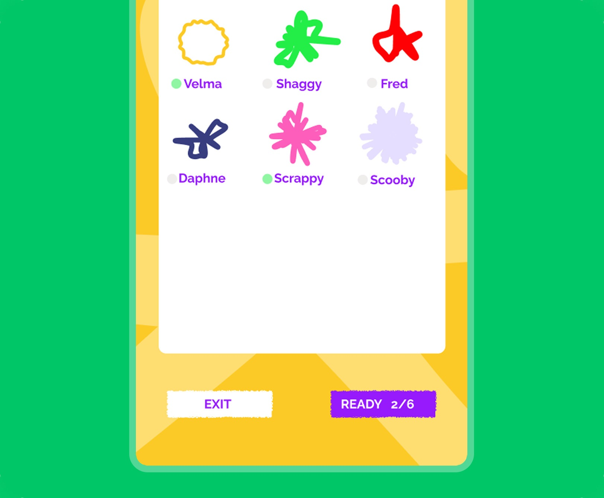
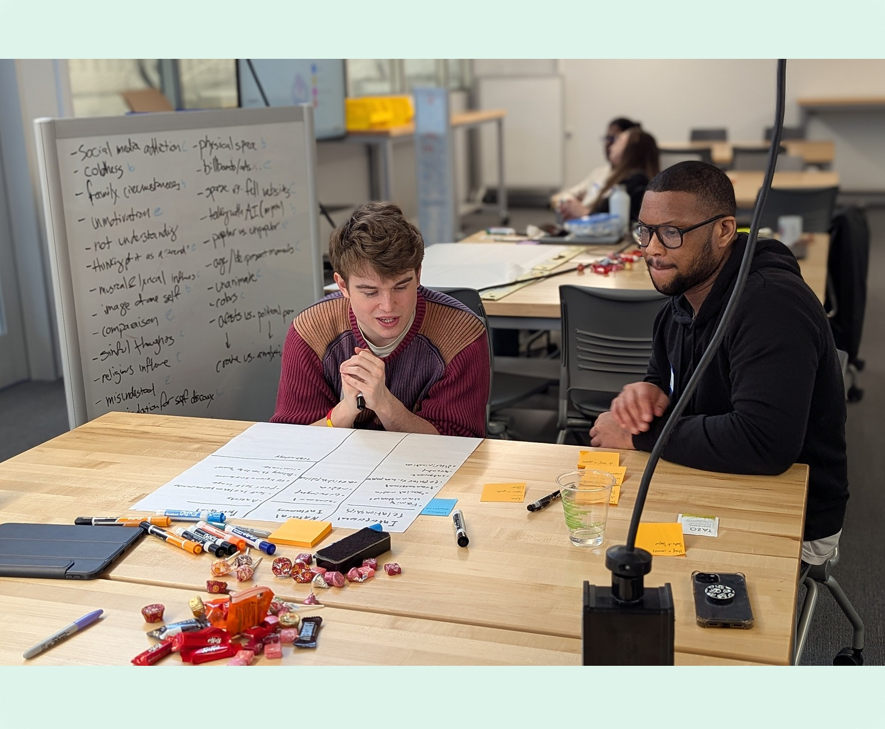
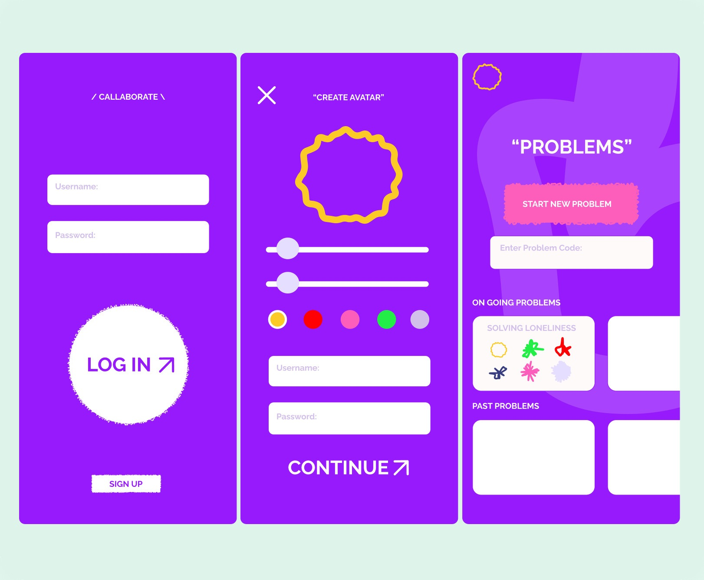
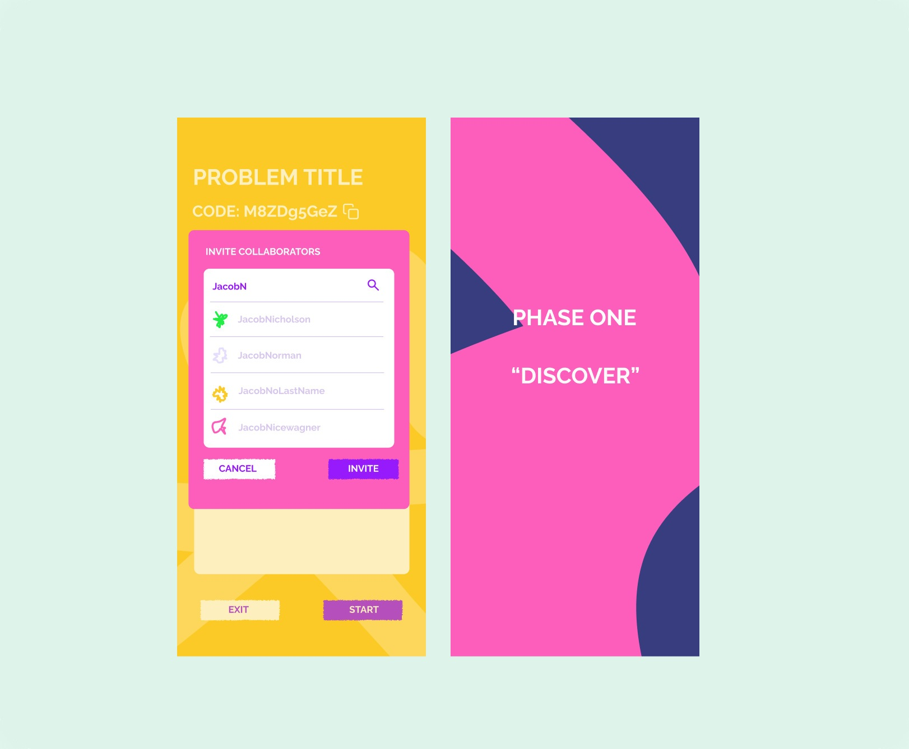
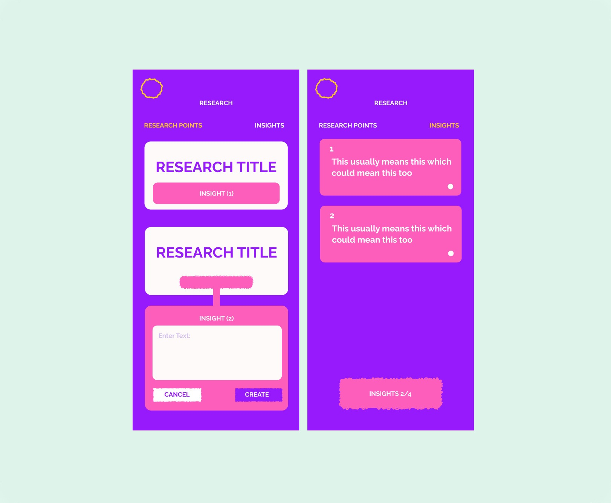

Kent State Design Innovation
2025Product Designer3 weeks
This is a concept for a mobile app designed to streamline collaborative design challenges. I’ve had the chance to participate and lead many interdisciplinary teams applying the Double Diamond design-thinking process, and I’ve sometimes noticed a difficulty in teammates who are approaching the process for the first time to understand how it works, and what step of the process we are on. This project attempts to create a guided and comfortable experience for collaborating.

Design thinking is to me an almost magical process in which everybody in a room can be uniquely valuable to the end product. By nature it requires someone to consider the gaps in their own perspective and fill them, before settling on the solution. I’ve always found that by the end of a successful hackathon or design challenge, I not only come out with an exciting concept, but a few new ways to see the world, which I think is even more valuable.

I think the most vital part of a design challenge is fostering a playful environment in which everyone can explore ideas freely and, more importantly, have fun doing it. In this project, I really wanted to keep that playfulness innately around. I thought allowing each user to create a totally unique avatar by just changing the Frequency and Wiggle of a stroke was a fun way to start the idea that each member of a team has a unique perspective to contribute.

This “squiggle” concept was a motif I tried to repeat tastefully across the experience. Combined with some solid colors, I tried to create a visual language that in itself will foster creativity and improve the final output of the session.

This is where the real meat of what I had set out to do began. Collecting research and data is the first step of the Double Diamond process and includes conducting research and defining what sources have to say about the problem you are trying to solve.